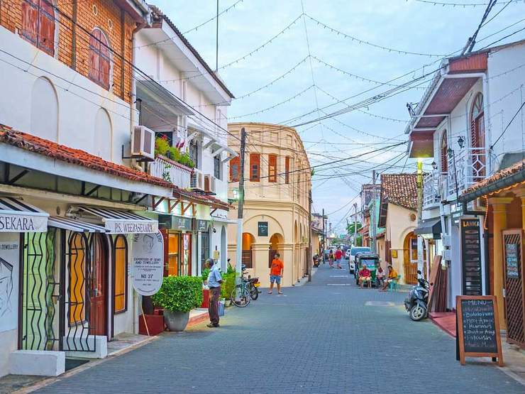

Galle Fort is the most beautiful coastal town in Sri Lanka. Here, life slows down as locals play cricket alongside the beach, travelers walk on the ancient fort walls, and street vendors sell fresh tropical fruit under the palm trees. Its history makes it a melting pot of culture, with a unique fusion of European and Asian influences, as seen in the whitewashed Dutch-style buildings that line the cobbled streets. Head to the most southwestern corner of the country and enjoy all the beautiful things to do in Galle Fort, Sri Lanka.
In the 18th century, the Dutch built their headquarters, Galle Fort, on the Sri Lankan coast, taking over from Portuguese rule since the 16th century. They fortified Galle, leaving behind beautiful European-style buildings still there today. Later, the British took over the town until Sri Lanka became an independent nation once again.
It is situated in 113 kilometers away from Colombo. The Galle Fort, also known as the Dutch Fort or the "Ramparts of Galle", is a historical, archaeological and architectural heritage monument, which even after more than 423 years maintains a polished appearance, due to extensive reconstruction work done by Archaeological Department of Sri Lanka. Galle lighthouse, Galle clock tower, Groote Kerk - Galle, All Saints' Church - Galle, National Museum in Galle, Old Dutch Hospital, National Maritime Museum Galle are main archaeological and architectural heritage monuments in Galle fort. The fort has a colorful history, and today has a multi-ethnic and multi-religious population. The Sri Lankan government and many Dutch people who still own some of the properties inside the fort are looking at making this one of the modern wonders of the world. The heritage value of the fort has been recognized by the UNESCO and the site has been inscribed as a cultural heritage UNESCO World Heritage Site under criteria IV, for its unique exposition of "an urban ensemble which illustrates the interaction of European architecture and South Asian traditions from the 16th to the 19th centuries."
One of the best things to do in Galle Fort is simply to walk around the ancient streets, visit the incredible handicraft shops, and admire the old-fashioned Dutch buildings. In fact, Galle Fort has some of the best shops in Sri Lanka! It’s the perfect place to buy souvenirs and mementos from your trip.